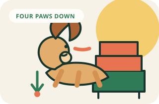

Leave furniture
Teach Off without pushing
Teach your dog to move off furniture or people and keep four paws on the floor until invited back up.
Goal
What success looks like
Your dog moves off the furniture or person after one cue and keeps four paws on the floor.
Visual method
See the sequence before you practice
The target is four paws on the floor. Guide with a reward tossed to the floor instead of pushing your dog down.

Complete method
One session, start to finish
- 01
Set up
Choose “Off” for getting down and keep “Down” only for lying down on the floor.
- 02
Warm up
Repeat one skill your dog already knows for 30 to 60 seconds.
- 03
Teach
Wait for a moment when your dog naturally begins to step down. Say “Off” once as the paws move toward the floor, then mark and reward on the floor.
- 04
Reward
Mark the exact behavior, then deliver the reward within one second.
- 05
Repeat
Do three to five easy repetitions. If two cues are missed, make the task easier.
- 06
Advance
Your dog moves off after one cue in eight of ten easy repetitions and remains on the floor until you invite them back up.
- 07
Finish
Use your release cue, reward one easy win, and end while your dog is still engaged.
Before you begin
Set up for an easy win
- Choose “Off” for getting down and keep “Down” only for lying down on the floor.
- Use a light leash indoors at first so you can guide without grabbing your dog.
- Have pea-sized treats ready near the training area.
- Choose furniture your dog can safely step down from.
Step by step
How to teach it
- 01
Practice when the dog is already moving
Wait for a moment when your dog naturally begins to step down. Say “Off” once as the paws move toward the floor, then mark and reward on the floor.
- 02
Toss a reward to the floor
If your dog is settled on the sofa, toss a treat onto the floor a short distance away. When your dog steps down, mark and reward again on the floor.
- 03
Add the cue just before movement
Say “Off” once before tossing the treat. Keep the tone neutral and avoid pulling, pushing, or grabbing the collar.
- 04
Reward four paws down
After your dog is on the floor, mark and reward the position you want: all four paws on the ground, with a relaxed body.
- 05
Practice at several pieces of furniture
Repeat near a sofa, bed, or chair at the easiest level. Use the same cue and reward on the floor rather than on the furniture.
- 06
Teach an invitation back up
When the dog is reliable, add a separate “Up” or “Okay” invitation. Only allow access to furniture after the release cue has been given.
Success checkpoint
You are ready to add difficulty when…
Your dog moves off after one cue in eight of ten easy repetitions and remains on the floor until you invite them back up.
When progress stalls
Common problems and fixes
My dog jumps right back onto the sofa.
Reward on the floor, pause, and then ask for an easy skill such as a sit before giving another treat. Practice when you can repeat the sequence calmly.
My dog confuses Off with Down.
Use Off only for getting down and Down only for lying on the floor. Practice the two skills in separate short sessions.
My dog growls or guards the furniture.
Do not pull or force your dog off. Separate the dog from the furniture with a safe barrier and seek a qualified force-free behavior professional.
Trainer note
The goal is a dog who can share the home comfortably, not a dog who is never allowed on furniture. Invitations can be part of the plan.